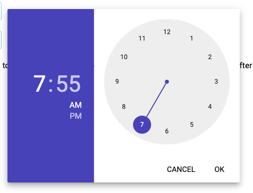
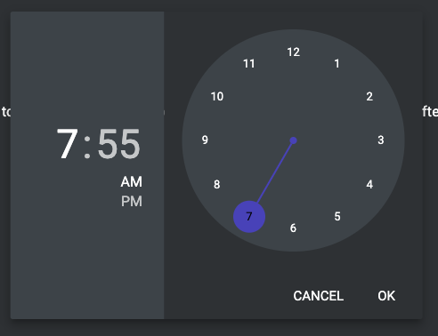
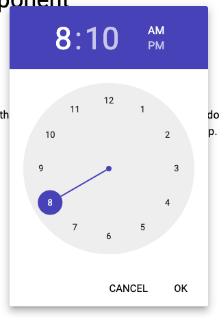
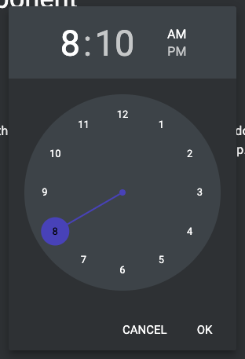

TimePicker
Adds a time picker component to the app.




ui.addTimePicker(time, options)| Parameters | Type | Description |
| time | String | A default time value to which the timepicker begins. Value is of the form HH:mm |
| options | String | A comma separated options. Orientation: Portrait, Landscape Format: 24H, 12H |
Returns TimePicker Component
Properties
These are the available setter/getter properties of the TimePicker component.
| Properties | Type | Description |
| format | String | Sets or returns the time format. Can be of the form Hour formats H : 0 1 ... 22 23 HH : 00 01 ... 22 23 h : 1 2 ... 11 12 hh : 01 02 ... 11 12 Minute formats m : 0 1 ... 58 59 mm : 00 01 ... 58 59 AM/PM A : AM or PM a : am pm |
Methods
Here are the methods available for TimePicker Component.
show
Show the date picker the dialog.
tpk.show()hide
Hide the date picker dialog.
tpk.hide()setOnSelect
Sets a callback function to execute when date picker dialog is submitted.
tpk.setOnSelect( callback )| Parameters | Type | Description |
| callback | Function | Function to be called on submit. This will pass value String The selected time of the form HH:MM:SS. Change the format by setting the format property. |
setFormat
Sets the format of the date to be passed into the onSelect callback.
tpk.setFormat( format )| Parameters | Type | Description |
| format | String | A time format. Can be of the form Hour formats H : 0 1 ... 22 23 HH : 00 01 ... 22 23 h : 1 2 ... 11 12 hh : 01 02 ... 11 12 Minute formats m : 0 1 ... 58 59 mm : 00 01 ... 58 59 AM/PM A : AM or PM a : am pm |
isVisible
Get the current visibility of the date picker.
tpk.isVisible()Returns Boolean
Examples
EXAMPLE - BASIC
class Main extends App
{
onStart()
{
// Creates a layout with objects verticaly centered.
this.main = ui.addLayout( "main", "Linear", "VCenter,ScrollY", 1, 1 )
// button to show time picker
this.btn = ui.addButton( this.main, "Show Time Picker", "Outlined,Secondary", 0.2 )
this.btn.setOnTouch( this.showTimePicker )
// Initialize time picker
this.tpk = ui.addTimePicker()
this.tpk.setOnSelect( this.onSelect )
}
showTimePicker()
{
// show time picker dialog
this.tpk.show()
}
onSelect( value )
{
console.log( value )
}
}